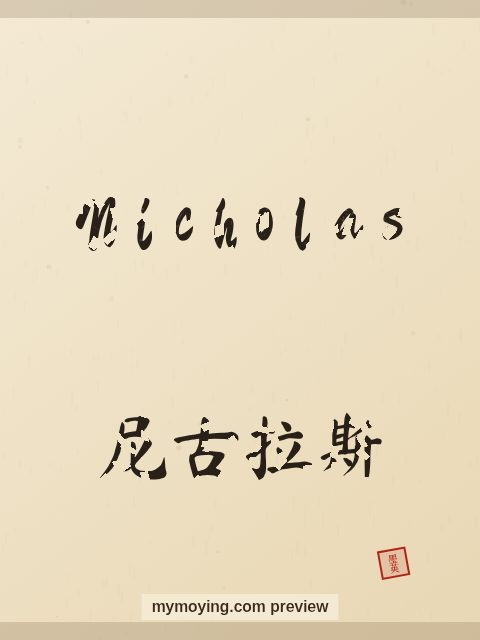

Nicholas in Chinese Calligraphy
See how the name Nicholas looks written with a traditional Chinese brush, next to its Chinese transliteration 尼古拉斯 (Ní gǔ lā sī).

Sample. “Nicholas” in the Regular (楷书) brush style with the Chinese name 尼古拉斯 (Ní gǔ lā sī). The paid file removes the watermark.
The Chinese characters for Nicholas
As a transliteration, Nicholas is usually written 尼古拉斯 (Ní gǔ lā sī). Each character is listed below with its own dictionary meaning — the name is chosen by sound, not by meaning, and Moying does not translate names. Please have a person review the characters before any permanent use such as a tattoo.
Origin and meaning
Nicholas is a Greek name meaning “victory of the people”.
About the name Nicholas
Saint Nicholas, the fourth-century bishop, is the model for Santa Claus.
As a gift or a tattoo
If you are choosing a name for a print or a tattoo, Nicholas carries the meaning “victory of the people” and looks striking in brush strokes.
Open Nicholas in the generatorFree watermarked preview. $1.99 once for a clean high-resolution download of this name in every style and setting. No subscription. Digital product, delivered instantly; see Terms.